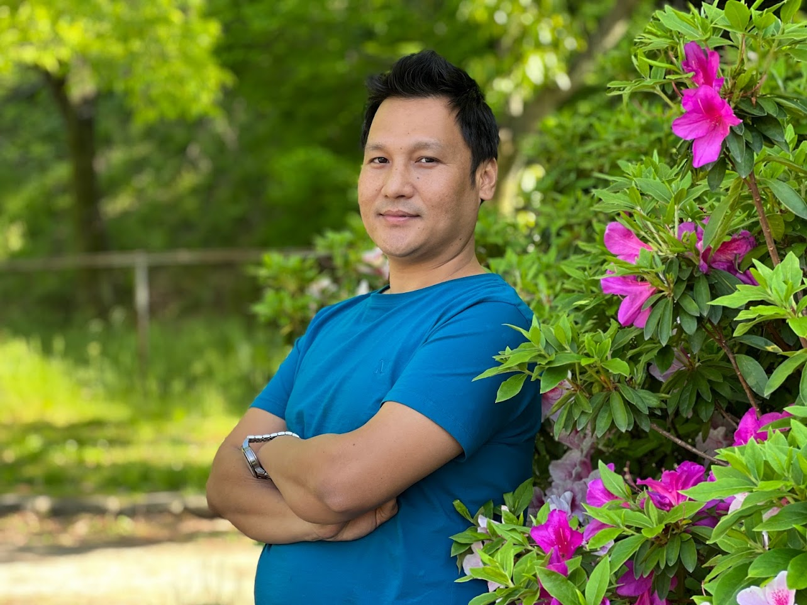

My name is Jhabi Lal Rana. DOB 18th March, 1988 A.D. My Permanent resident is Kawasoti Municipality, Ward No. 01, Nawalparasi, Nepal . I represent from a sweet family with 2 kids, Mother, father and my supporting wife. My father and mother both are farmers. I am studying "Global Entrepreneurship" at the The Kyoto College of Graduate for studies for informatic.
My Hobbies
Playing Cricket
Playing Chess
Spending Time with Family
Watching Movies
Travel and Explore New Places
Reading Novel
Listening Songs

Other Properties
Education
2010: Completed Bachelor Degree from Kumarwarti Multiple Campus
Work Experiance One
Secondary level teacher in Modern Holy Garden Bording School, Kawasoti-06, Nawalparasi
Permanent Address
Kawasoti,Nawalparasi
Language Spoken
Nepali
English
Hindi
Japanese Learning
Nepali Songs
Nepali Song Video
Location of My house
Current Address
162 - 0029 Fushimi Ward, Kyoto City, Fukakusha Nishiura 2-39